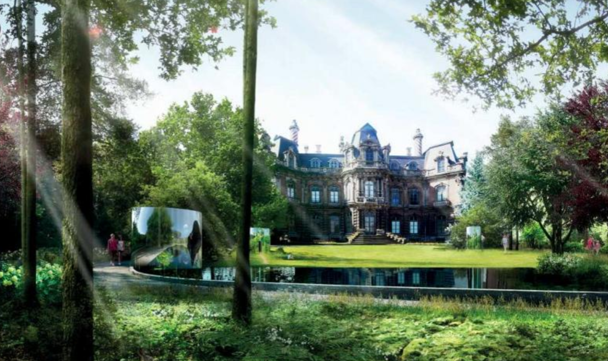
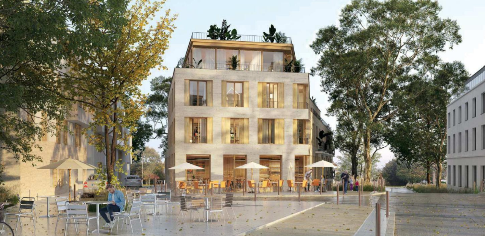
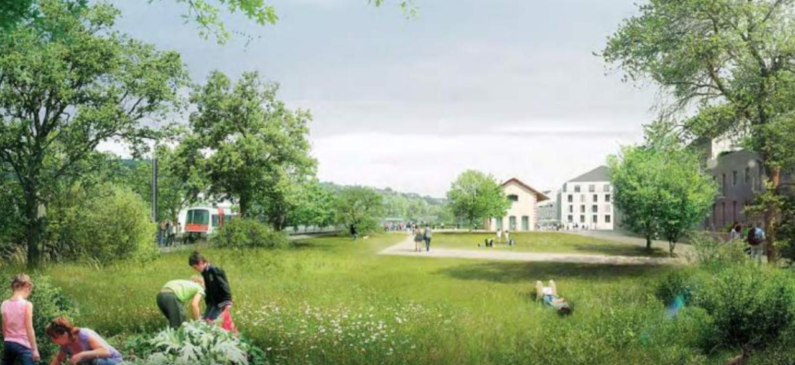

LES TARTRES

EPERNAY

VIROFLAY

Atelier jours est un atelier de paysage, fondé par Julia Golovanoff et Pierre Vandenbrouck en 2006, dès leur sortie de l’Ecole Nationale Supérieure du Paysage de Versailles. Pierre Vandenbrouck est également ingénieur spécialiste de l’Aménagement et de l’Environnement, diplômé de l’Ecole Centrale de Nantes. L’équipe est complétée par des paysagistes ou architectes dont le nombre varie selon la charge de travail.